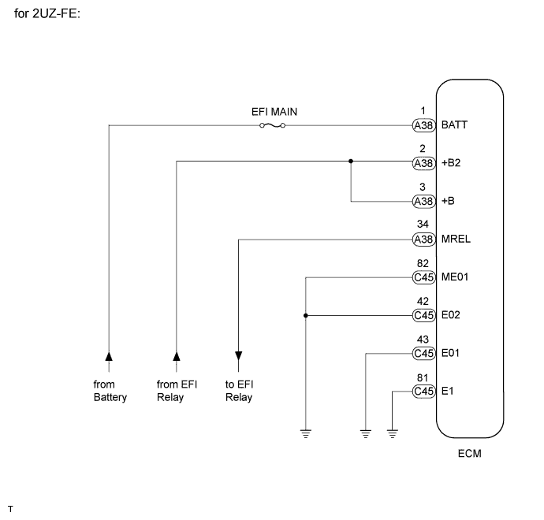
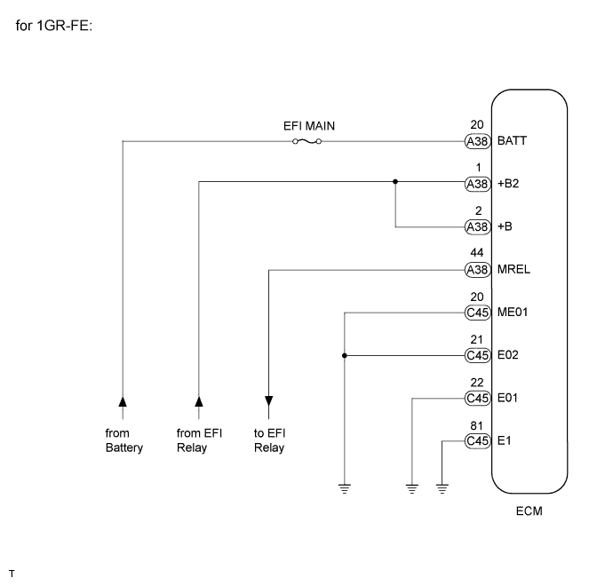
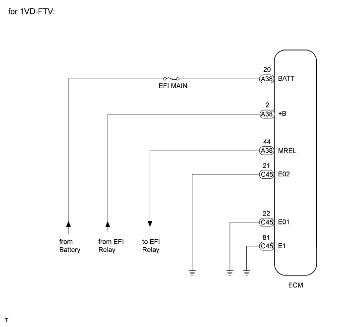
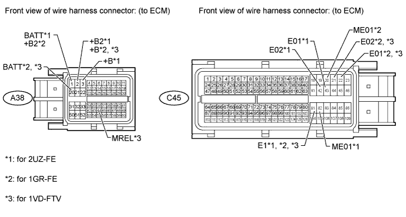

CAN COMMUNICATION SYSTEM (for LHD) > ECM Communication Stop Mode |
| Detection Item | Symptom | Trouble Area |
| ECM Communication Stop Mode |
|
|



| 1.CHECK HARNESS AND CONNECTOR (ECM - BATTERY AND BODY GROUND) |

Disconnect the A38 and C45 ECU connectors.
Measure the resistance according to the value(s) in the table below.
| Tester Connection | Condition | Specified Condition |
| C45-81 (E1) - Body ground | Always | Below 1 Ω |
| C45-42 (E02) - Body ground | ||
| C45-43 (E01) - Body ground | ||
| C45-82 (ME01) - Body ground |
Measure the voltage according to the value(s) in the table below.
| Tester Connection | Condition | Specified Condition |
| A38-1 (BATT) - Body ground | Always | 11 to 14 V |
| A38-2 (+B2) - Body ground | Battery positive (+) voltage applied to terminal A38-34 (MREL) | |
| A38-3 (+B) - Body ground | Battery positive (+) voltage applied to terminal A38-34 (MREL) |
Measure the resistance according to the value(s) in the table below.
| Tester Connection | Condition | Specified Condition |
| C45-81 (E1) - Body ground | Always | Below 1 Ω |
| C45-22 (E01) - Body ground | ||
| C45-21 (E02) - Body ground | ||
| C45-20 (ME01) - Body ground |
Measure the voltage according to the value(s) in the table below.
| Tester Connection | Condition | Specified Condition |
| A38-20 (BATT) - Body ground | Always | 11 to 14 V |
| A38-1 (+B2) - Body ground | Battery positive (+) voltage applied to terminal A38-44 (MREL) | |
| A38-2 (+B) - Body ground | Battery positive (+) voltage applied to terminal A38-44 (MREL) |
Measure the resistance according to the value(s) in the table below.
| Tester Connection | Condition | Specified Condition |
| C45-81 (E1) - Body ground | Always | Below 1 Ω |
| C45-21 (E02) - Body ground | ||
| C45-22 (E01) - Body ground |
Measure the voltage according to the value(s) in the table below.
| Tester Connection | Condition | Specified Condition |
| A38-20 (BATT) - Body ground | Always | 11 to 14 V |
| A38-44 (MREL) - Body ground | Engine switch on (IG) | 11 to 14 V |
| A38-2 (+B) - Body ground | Battery positive (+) voltage applied to terminal A38-44 (MREL) | 11 to 14 V |
| Result | Proceed to |
| OK (for 2UZ-FE) | A |
| OK (for 1GR-FE) | B |
| OK (for 1VD-FTV) | C |
| NG | D |
|
| ||||
|
| ||||
|
| ||||
| A | ||
| ||